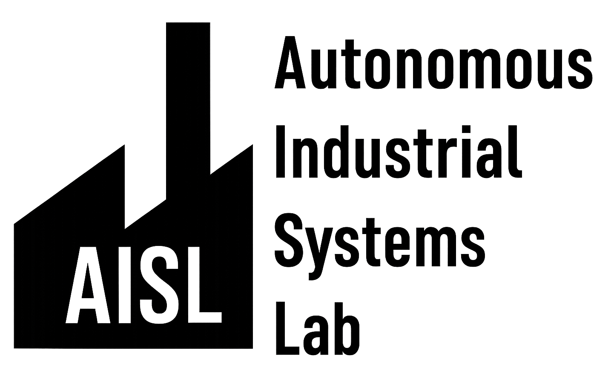
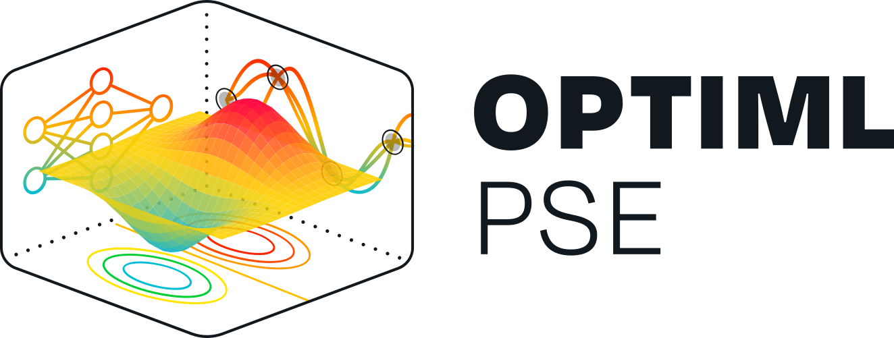
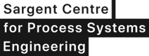
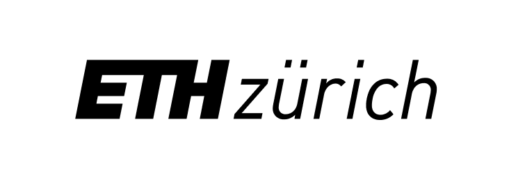

About Me

I'm a Swiss PhD student in Chemical Engineering at Imperial College London in the groups of Mehmet Mercangöz and Antonio Del Rio Chanona, where I investigate the integration of artificial intelligence and digital twins to enhance manufacturing and laboratory operations. I earned a Master of Science in Chemistry from ETH Zurich, focusing on renewable energy technologies, electrochemistry for energy storage and conversion, machine learning, and hybrid modeling. My master's thesis, supervised by Prof. Dr. G. G. Gosálbez and Dr. A. Butté, addressed optimal design of experiments for bioprocesses using hybrid models. Professionally, I worked as an Algorithm Research Associate at DataHow AG, advancing methods for uncertainty estimation and experimental optimization in bioprocess development.



Core Competencies
AI & Digital Twins
- Machine learning algorithms
- Digital twin development
- Process optimization
Chemical Engineering
- Bioprocess design
- Renewable energy technologies
- Electrochemistry
Modeling & Optimization
- Hybrid modeling
- Bayesian Optimization
- Uncertainty estimation
Professional Experience
2024 — 2025
Algorithm Research Associate
DataHow AG
Advanced methods for uncertainty estimation and experimental optimization in bioprocess development, working on cutting-edge algorithms and hybrid modeling approaches.
Education
2025 — Present
PhD in Chemical Engineering
Imperial College London, United Kingdom
Master of Science in Chemistry
2023 — 2024
ETH Zurich, Switzerland

Bachelor of Science in Chemistry
2018 — 2023
ETH Zurich, Switzerland